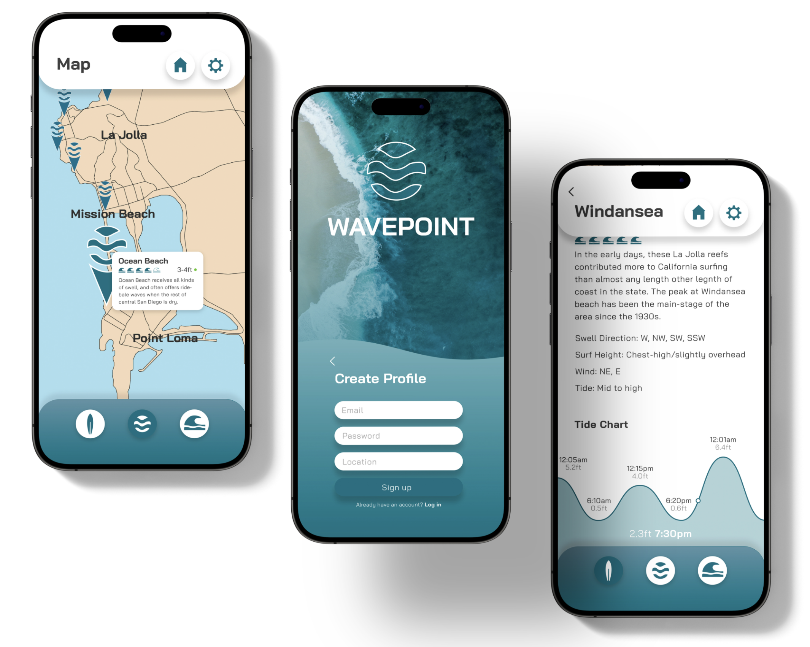
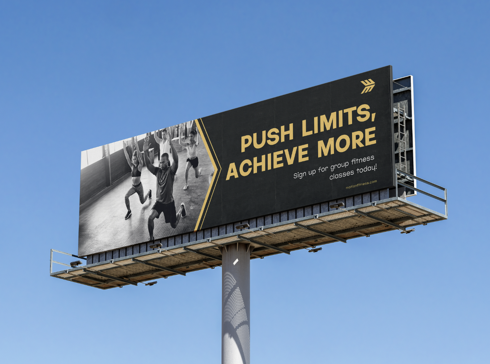
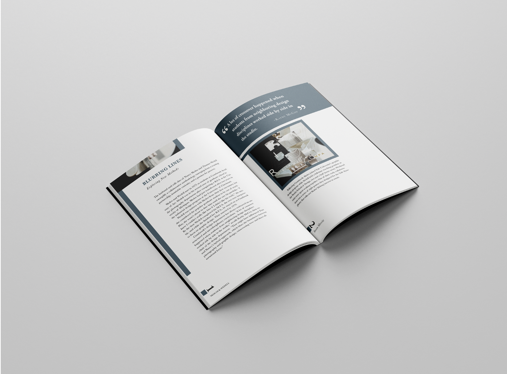

My Work
  

A passionate brand and UI/UX designer with a deep understanding of user-centered design principles and a keen eye for visual storytelling. I thrive on crafting intuitive and engaging digital experiences that elevate brands and connect with audiences on an emotional level. My expertise spans the entire design process, from user research and wireframing to visual identity creation and interactive prototyping.
I have experience designing user interfaces, brand systems, marketing collateral for a variety of platforms and products. I prioritize creating clean, accessible, and scalable designs that not only look stunning but also drive meaningful results. Furthermore, my marketing experience allows me to effectively promote and position brand products for maximum impact. I hold a Bachelors Degree in Graphic Design from San Diego State University. I am proficient in Figma, Webflow, HTML, Adobe Creative Suite and Canva. I possess a strong understanding of marketing strategies and channels.
I begin by understanding your goals and target audience. Sketching is crucial for exploring ideas quickly and collaboratively. From there, I move to digital mockups, prototypes, and finally, polished designs, incorporating feedback at each stage.
I'm proficient in industry-standard tools including Figma, Adobe Creative Suite (Illustrator, Photoshop, InDesign), and other relevant software as needed for specific projects.
I focus on UI/UX design, brand identity development (logos, style guides, etc.), and print design (brochures, business cards, etc.).
Yes! I work with clients locally and remotely. Video calls and online collaboration tools make the process seamless. Contact me for more information!